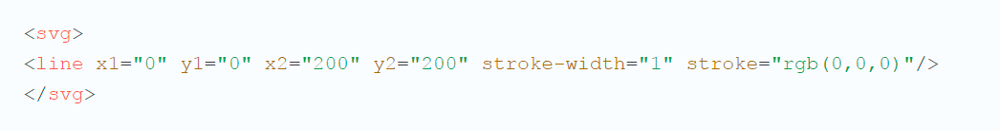
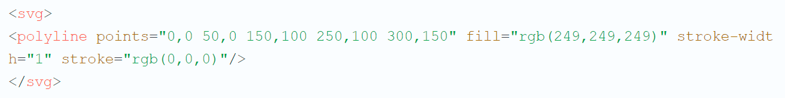
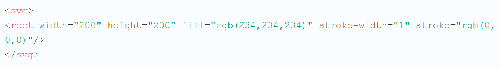
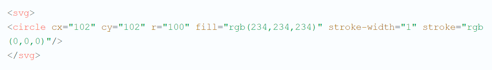
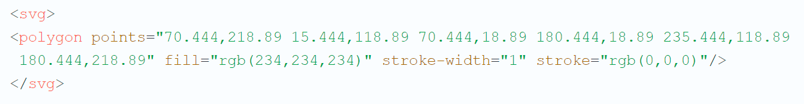

What is svg?
Scalable Vector Graphics is a vector-based format for web developers.
Browser support
- Internet Explorer 9+
- Mozilla Firefox 1.5+
- Internet Explorer 9+
- Mozilla Firefox 1.5+
- Netscape Navigator 9.0+
- Internet Explorer 9+
- Mozilla Firefox 1.5+
- Netscape Navigator 9.0+
- Google Chrome 3.0+
- Internet Explorer 9+
- Mozilla Firefox 1.5+
- Netscape Navigator 9.0+
- Google Chrome 3.0+
- Safari 4.0+
- Internet Explorer 9+
- Mozilla Firefox 1.5+
- Netscape Navigator 9.0+
- Google Chrome 3.0+
- Safari 4.0+
- Opera 8.0+
examples of using
- Logo
- Background image
- Use as a button
- Cards
- Charts or figures
The advantages
- Independent of resolution
- Supported in all modern browsers
- Relevant in the future
- Easy to create and edit
- Modified by CSS & JS
The advantages
- Compressible
- Text format
- Scalability
- Supported scripting languages based on the ECMAScript specification
- SVG is an open standard
the disadvantages
- There is no support for older browsers
- No photo
- No 3D graphics
Basic SVG figures
- A rectangle
- A circle
- A line
- A broken line
- A polygon
Line

Polyline

Rectangle

Circle

Polygon
